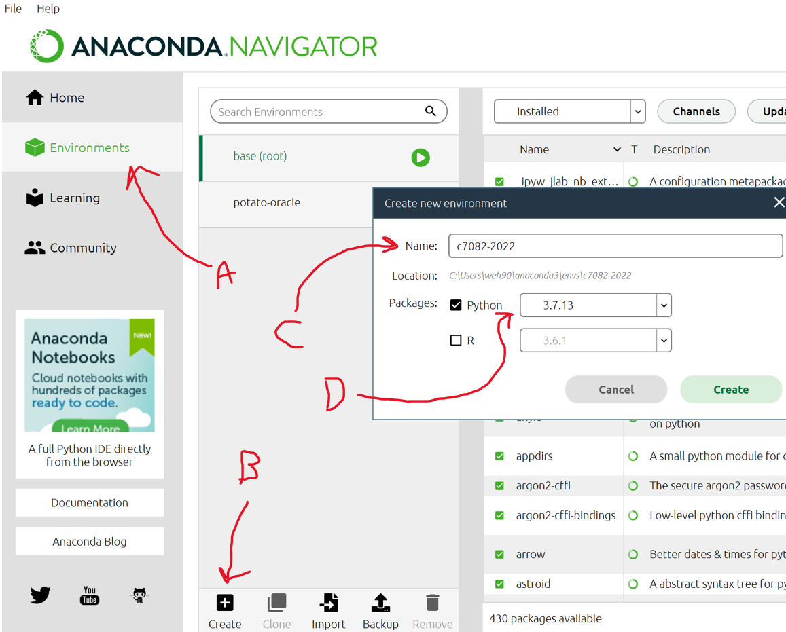

00 Preparation
1 There can be only one (Python environment)
Actually that is not true, there are and can be many Python environments. There are so many options for using Python that it becomes a burden of choice for new users, and most regular users will choose different environments to fit different simple, common tasks.
We might quickly make a comparison with using the R programming language. For typical R use we can just “install and go” and we do not need to think about computer software and hardware “system administration”. When using R most people:
Use the newest version of
RpossibleUse the same editor, probably
RStudioObtain packages from the exact same repository,
CRAN(the Comprehensive R Archive Network)Rpackage version management is largely unnecessaryWrite and run
Rcode on our local computer with no setup or configuration required
Python is different, because system adminsitration in some form is often required, even for basic use. In Python:
We must pay attention to our Python version (major version 2, major version 3, version 3.7 or higher, etc.)
There are MANY editors, like IDLE, Spyder, RStudio, Jupyter notebooks, and so many more
Python libraries (exactly like R packages) come from several major repositories and version incompatibility is ahem challenging
We must actively manage library versions (this requires moderate to great practice)
We often write and run code locally, on edge devices, or in the cloud depending on our need or application
Many cloud options for running Python exist, each with pros and cons (Google Colab, Kaggle, Amazon Sagemaker Studio Lab, many others); of course more advanced management options exist too
2 Anaconda and Google Colab
We will discuss and use two different alternatives to managing our python installation and our Python libraries. Here we will briefly mention each.
2.1 Anaconda
Anaconda is software designed to manage different environments for Python (and other software), libraries and editors. It is popular because it is easy to use and is free and open source. Part of the Anaconda ecosystem is the Python repository conda.
You may wish to watch the following video:
Anaconda explanation on Youtube
Otherwise you can download and install Anaconda:
Once installed you can create a new environment:

A. Click the Environments tab
B. Click Create +
C. Name your new environment something sensible
D. I recommend starting with Python 3.7 (the same version as Google Colab as of 2022-10-15)
Once you have created an environment, you can install Jupyter Lab:
A. Click the Home tab
B. Ensure your new environment is selected
C. Find the Jupyter Lab panel
D. Hit the install button
2.2 Use of Jupyter lab
Using code embedded interactively with formatted text and images is very handy - like a webpage that allow you to enter and run computer code. This is the basic way that is popular to write and execute Python collaboratively. The tools we will highlight are are based around documents called “notebooks”.
Jupyter Lab iPython notebooks (.ipynb files)
Google Colab iPython notebooks (also .ipynb files))
The basic idea is to edity code in “cells” and execute the code within a computing environment. The use of this system is very simple and powerful, but may seem counterintuitive at first. The following video may help illustrate the idea before we dive in and try Jupyter lab ourselves.
2.3 Google Colab
Using Colab requires a Google account, so create one if you do not already have one. If you do already have one, you will probably want to have some free storage space on your Google Drive space (you have ~15GB for “free”). If you do not have enough space for managing some new data to your Google Drive, you might consider making a new google account just for the purpose of using Colab.
You may wish to watch the following video:
You can follow along with the video once you are signed into your Google account using your own Colab space